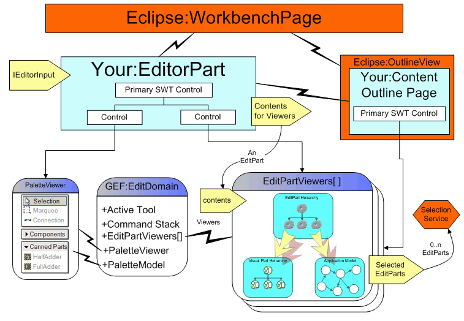
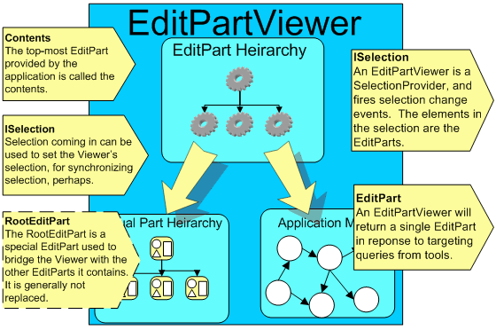
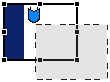
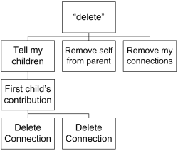

Introduction
EditPartViewers
Model View Controller Architecture
EditParts
EditPolicies Requests, and Roles
Tools and the Palette
The Steps to Building a GEF application.
This documentation assumes
a working knowledge of the following APIs:
- Eclipse Workbench (Just the base platform, including JFace and SWT)
- Draw2d
The majority of GEF applications will be Eclipse Editors ({@link org.eclipse.ui.IEditorPart}). Although this is not required, we will
generally assume that this is the case. The EditorPart is the single entry
point into your applications code. Once created, it will build the bulk of
the remaining pieces. A full blown graphical Editor would generally
consist of the following:
- the EditorPart, which constructs the primary Control and most other parts
- SWT Controls and GEF viewers for those controls
- a PaletteViewer and a Palette model for it
- an OutlinePage, which might host one of the GEF viewers
- a PropertySheetPage, which, among other things, should integrate undo/redo
capabilities.
- an EditDomain, which ties together everything, and hosts the undo
stack
| |
EditDomain Many GEF developers wonder why
EditDomain doesn't just specialize IEditorPart. An EditDomain is a single
editing "session". For
most applications, there is a one-to-one relationship between the EditDomain and
the EditorPart, and they can be thought of as a single unit. However,
making the EditDomain its own Object and interface decouples the role of
graphical editing from the resource management role of an
EditorPart. As an added benefit, flexibility is increased. It may span
across multiple EditorParts working on the same model instance, or it may be
confined to just one View in a Perspective.
|
The following diagram depicts the in-memory model of a typical GEF editor.
Eclipse creates the EditorPart and then sends it the IEditorInput. The EditorPart
initializes the EditDomain, viewers, palette, etc. The EditorPart then bootstraps the
EditPartViewers by providing an EditPart as the contents. This is similar to supplying a content provider for JFace
Viewers. EditParts are discussed elsewhere.

A GEF application is built from {@link org.eclipse.gef.EditPartViewer
EditPartViewers}, which are similar to JFace Viewers in that they adapt an
SWT Control.
EditPartViewers know about two things:
- EditParts
- Some type of visuals (for example, draw2d Figures or SWT TreeItems).
EditPartViewers are responsible for hit-testing a point, and mapping it to
the EditPart which created the visuals at that point. This is used by
Tools, which communicate with the EditParts. The two provided implementations,
{@link org.eclipse.gef.ui.parts.GraphicalViewerImpl GraphicalViewerImpl} and
{@link org.eclipse.gef.ui.parts.TreeViewer TreeViewer}, provide this type of
support for Figures and TreeItems respectively.
EditParts take the place of ContentProviders in JFace. Each EditPart is
its own "mini" ContentProvider, responsible for creating and maintaining its own
structure. Continuing with the JFace analogy, each EditPart is also its
own "mini" LabelProvider, responsible for creating and maintaining its visuals,
whatever they may be.
An EditPartViewer is bootstrapped by providing the top-level EditPart
for that viewer, called its contents. Once the contents is in place
and the viewer is realized (meaning it has an SWT Control), it will begin
populating the viewer with additional EditParts, which in turn each initialize
their own structure, etc., until the entire viewer is initialized.
EditPartViewers are ISelectionProviders and maintain the set of selected
EditParts.

The RootEditPart is special. It should rarely be replaced. see:
{@link org.eclipse.gef.RootEditPart}.
 MVC Architectures are quite common in UI frameworks. In general, the
model represents the data being displayed, the view is
responsible for rendering the data, and the controller is responsible
for handling user input, making changes on the model if necessary, and
refreshing the view.
MVC Architectures are quite common in UI frameworks. In general, the
model represents the data being displayed, the view is
responsible for rendering the data, and the controller is responsible
for handling user input, making changes on the model if necessary, and
refreshing the view.
In many implementations (JTree, for example), the model's API is designed specifically for the
view. When the view renders itself, it communicates heavily with the
model. This allows many optimizations, but it makes it difficult to use
the view-model pair for anything but their default. In addition, the
client of such a UI almost always has to wrapper their existing model to
comply to the view-specific one.
 In
GEF, their is generally no link between the view and model. This means
that almost any view can be used to render almost any model. There is no
need to wrap you model to conform to another API. In fact, the
view-to-model mapping may not be 1-to-1. The roles of model,
view, and controller for GEF are defined below:
In
GEF, their is generally no link between the view and model. This means
that almost any view can be used to render almost any model. There is no
need to wrap you model to conform to another API. In fact, the
view-to-model mapping may not be 1-to-1. The roles of model,
view, and controller for GEF are defined below:
- Model
- The model should
know nothing about its view or controller. It may reference them only as
listeners to its notification mechanism. The model should be changed using {@link org.eclipse.gef.commands.Command
Commands}.
- View
- The view can be several things. It includes the visual part,
which serves as the primary representation for the model object(s). The most flexible visual parts are {@link
org.eclipse.draw2d.Figure Figures} from draw2d. GEF also provides
support for SWT TreeItems, but support for other visuals can easily be added. While "visual part" refers to
the object primarily representing a
model object, the more encompassing "view" includes feedback, handles, tooltips,
and all things visible to the user. All of these make up the view, and it
is the controller's job to construct and manage them.
- Controller
- A controller is an {@link org.eclipse.gef.EditPart EditPart}, and
EditParts are the bread-and-butter of GEF. As you've read above, the
view may consists of several visuals. The visuals may be on different
graphical layers and appear at different times during editing:
|
 |
This picture depicts a complex view consisting of
the primary visual part, some resize handles, and feedback which is
displayed as the user drags the object. The entire view is managed
by the EditPart. |
The view can be complex, but so can the model. Another EditPart
responsibility is to manipulate the model with commands. A complex model
can lead to complex commands. This makes the creation of such commands a challenging
task.
|
 |
A composite command to perform a delete is depicted here.
Imagine in the view shown above that there is a connection
from the OR-gate (in blue) to some other part not shown. When the
gate's parent, the selected object, is deleted, the connection needs to be
removed. In GEF, this is done generically so that there are no
assumptions by the parent of its child's structure. The child is
told what is happening, and provides its contribution. |
The job of the controller is a complex aggregation of many roles. Yet,
at the same time, the roles may be independent of each other. Some types
of EditParts in an application may share some roles, but not others.
Some roles may change dynamically. To make the EditPart's job easier,
each role is implemented by a pluggable object called an {@link
org.eclipse.gef.EditPolicy EditPolicy}. The next section on EditParts
will explain this in more detail.
 An EditPart represents a single conceptual object with which the user can
directly or indirectly interact. In general, an EditPart will directly
represent something in the model. The EditPart itself is not visible to
the user, but will present itself through its view, as described above.
An EditPart represents a single conceptual object with which the user can
directly or indirectly interact. In general, an EditPart will directly
represent something in the model. The EditPart itself is not visible to
the user, but will present itself through its view, as described above.
The most fundamental role of an EditPart and the one that is usually
implemented first is to populate the viewer with visuals, and to maintain
those visuals as the model changes. This topic is covered briefly in the
MVC Section, and in more detail in the JavaDOC for {@link
org.eclipse.gef.EditPart EditPart} and its abstract implementations.
The second and more interesting role of an EditPart is to perform graphical
editing. Graphical editing is defined here as:
- Manipulating the Model - EditParts must manipulate the model by
creating Commands in response to Requests.
- Display Feedback -
EditParts should show feedback during complex interactions with the user.
- Delegation - Either of the previous two jobs can delegated to
additional EditParts.
Examples of graphical editing might include:
- resizing and moving parts within a layout
- creating and editing connections
- dropping parts inside other parts
Many more types of interactions are conceivable. Consider the
following:
- Many types of interactions are unrelated to each other
- Some of these interactions are shared across different types EditParts,
while others are not
- Some types of interactions (layouts, for example) are dynamic and depend
on state
- The java programming language only supports single inheritance
- Separation of concerns allows for easier code management and assignment
to developers
 |
For all of these reasons, the task of graphical editing is not
implemented directly by EditParts. Instead, each EditPart
installs one or more EditPolicies, each of which focuses on its own editing
concern. Then, the EditPart forwards edit requests to every installed
EditPolicy, returning the compiled contributions when necessary. The
next section describes the provided EditPolicies
and shows when and how each should be used and extended. |
EditPolicy
An
EditPolicy provides a specific editing role to an EditPart. A Role might
be something like "layout management". That policy's role is loosely
defined by the Requests which it understands. An EditPart iterates
over all of its EditPolicies to handle Requests. EditPolicies ignore
the Requests that don't apply to them.
Roles
An
EditPolicy is installed into its EditPart using a String identifier key which
GEF refers to as a Role. A role is nothing more than the String
used when installing an EditPolicy. The purpose of the key or Role is
to allow the EditPolicy to be swapped or replaced. Since an EditPart
implementation installs its policies, a subclass may need to override a policy
added by its superclass. Or, the dynamic state of the model may
determine the set of installed EditPolicies. "Role" and "EditPolicy" are
used interchangeably.
Requests
{@link
org.eclipse.gef.Request Requests} are used to communicate with an EditPart.
As mentioned before, the EditPart delegates all Requests to its installed
EditPolicies. Each Request has a type identifier which is
used to route/filter requests. Once this is done, Requests are sometimes
cast to a more specific type to obtain additional information. A typed
Request will be referred to as just a "Request" in this document.
GEF defines a common set of Requests, EditPolicies, and the Roles that
those EditPolicies provide. The developer can ignore these, use them, and/or extend
them.
Roles and EditPolicies in GEF are partitioned into two basic types: graphical, and
non-graphical. Non-graphical roles handle everything that can be handled
from the model without knowing about any type of view. This means that
those roles are reusable in different types of viewers. Graphical roles
handle everything that requires knowledge of the view. Obviously this
includes feedback, but it also includes taking positional data and converting
it to something in the model.
Many non-graphical roles have a graphical counterpart. Request may be
handled by either the non-graphical or graphical role, or by both together.
For example, when adding something to a container, the Container Role may
perform the primitive addition, while the Layout Role handles the mouse
coordinates and generates a location constraint for the new child.
Roles and their definitions:
|
Role |
Definition |
| --- Non-graphical Roles |
| COMPONENT_ROLE |
The fundamental role that most EditParts should have. A
component is something that is in a parent, and can be deleted from that
parent. More generally, it is anything that involves only
this EditPart (and doesn't involve the view, since it is non-graphical).
In the Logic example, the LEDEditParts have a specialized EditPolicy in
the Component Role that knows how to increment the value of the LED
object. |
| CONNECTION_ROLE |
The fundamental role that ConnectionEditParts should have
(instead of a COMPONENT_ROLE).
Connections are slightly different than components because deletion
typically means to remove the connection from its source and target node,
not necessarily to remove it from a parent. |
| CONTAINER_ROLE |
The fundamental role that most EditParts with children should have.
A container may be involved in adds/orphans, and creates/deletes. |
| NODE_ROLE |
The fundamental role that most node EditParts (parts which
have connections to them) should have. The node role may participate
in connection creates, reconnects, and deletions. |
| --- Graphical Roles |
| PRIMARY_DRAG_ROLE |
Used to allow the user to drag the EditPart. The user may drag
it directly by clicking and dragging, or perhaps indirectly by clicking on
a Handle which that part created. |
| LAYOUT_ROLE |
The Layout role is placed on a container EditPart that has
a graphical layout. If the layout has constraints, it will handle
calculating the proper constraints for the input, or it may have no
constraints other than the index where children will be placed. |
| GRAPHICAL_NODE_ROLE |
A node supports connections to terminals.
When creating and manipulating connections, EditPolicies with this role
might analyze a Request's data to perform "hit testing" on the graphical
view and determine the semantics of the connection. |
| CONNECTION_ENDPOINTS_ROLE |
Allows the user to drag the ends of a ConnectionEditPart
in a graphical way. |
| CONNECTION_BENDPOINTS_ROLE |
Allows the user to drag and create bendpoints in the
middle of a connection. |
| SELECTION_FEEDBACK_ROLE |
This role is a feedback only. The SelectionTool will
send two types of requests to parts as the mouse enters and pauses over
objects. EditPolicies implementing this role may alter the
EditPart's view in some way, or popup hints and labels and the like. |
| TREE_CONTAINER_ROLE |
The equivalent of a Layout Role for a native SWT Tree.
This EditPolicy should show feedback in the Tree and calculate indices
similar to dragging in file explorers. |
Request Types and Their Uses:
| Request |
Receiver |
Definition |
EditPolicies which understand that Request |
| --- Manipulating Connection Semantics |
| REQ_CONNECTION_SOURCE |
Node |
To create the source half
of a connection. This Request works in conjunction with
REQ_CONNECTION_TARGET |
GraphicalNodeEditPolicy |
| REQ_CONNECTION_TARGET |
Node |
To complete the creation of
a connection. |
GraphicalNodeEditPolicy |
| REQ_RECONNECT_SOURCE |
Node |
To reconnect the
source endpoint of a connection |
GraphicalNodeEditPolicy
ConnectionEndpointEditPolicy |
| REQ_RECONNECT_TARGET |
Node |
To reconnect the
target endpoint of a connection |
GraphicalNodeEditPolicy
ConnectionEndpointEditPolicy |
| --- Manipulating Connection
Bendpoints |
| REQ_MOVE_BENDPOINT |
Conn. |
To move an
existing bendpoint |
BendpointEditPolicy |
| REQ_DELETE_BENDPOINT |
Conn. |
To delete
an existing bendpoint |
BendpointEditPolicy |
| REQ_CREATE_BENDPOINT |
Conn. |
To create
a new bendpoint |
BendpointEditPolicy |
|
---
Moving objects within a container |
| REQ_RESIZE |
Child |
To change the size and/or
location of an object |
ResizableEditPolicy |
| REQ_RESIZE_CHILD |
Parent |
To change the size and/or
location of an object's child |
LayoutEditPolicy |
| REQ_MOVE |
Child |
To move an object |
ResizableEditPolicy |
| REQ_MOVE_CHILDREN |
Parent |
To move an object's child |
LayoutEditPolicy |
| --- Reparenting objects across
multiple containers |
| REQ_ORPHAN |
Child |
Ask the child to disassociate itself from its parent |
ComponentEditPolicy
[Non]ResizableEditPolicy |
| REQ_ORPHAN_CHILDREN |
Parent |
Ask the parent to disassociate a set of children |
ContainerEditPolicy
LayoutEditPolicy |
| REQ_CREATE |
Parent |
Ask the parent to create a new child |
ContainerEditPolicy
LayoutEditPolicy |
| REQ_ADD |
Parent |
Ask the parent to add an existing child (a
re-parenting) |
ContainerEditPolicy
LayoutEditPolicy |
| --- Deleting objects |
| REQ_DELETE |
Any |
To delete the object |
All, potentially |
| REQ_SOURCE_DELETED |
Conn. |
Indicates that the
connection's source will be deleted |
ConnectionEditPolicy |
| REQ_TARGET_DELETED |
Conn. |
Indicates that the
connection's target will be deleted |
ConnectionEditPolicy |
| REQ_DELETE_DEPENDANT |
Parent |
Indicates that the parent's
child will be deleted |
ContainerEditPolicy
LayoutEditPolicy |
| REQ_ANCESTOR_DELETED |
Descendant |
Indicates that an object's
ancestor will be deleted |
All, potentially |
| --- Miscellaneous |
| REQ_SELECTION |
Any |
The Selection Tool is over
an object |
SelectionEditPolicy
and others |
| REQ_SELECTION_HOVER |
Any |
The Selection Tool has
paused over an object |
SelectionEditPolicy
and others |
| --- Not yet implemented |
| REQ_ALIGN |
Child |
To align an object to a
constraint |
|
| REQ_ALIGN_CHILD |
Parent |
To align a child to a
constraint |
|
Index to the Included EditPolicies:
| AbstractEditPolicy |
Description |
| m |
AbsractTreeContainerEditPolicy |
Works together with the Container Role and SWT Trees |
| |
ComponentEditPolicy |
Support for the Component Role |
| |
m |
RootComponentEditPolicy |
Disallows deletion |
| |
ConnectionEditPolicy |
Support for the Connection Role |
| |
ContainerEditPolicy |
Support for the Container Role |
| |
GraphicalEditPolicy |
|
| |
|
GraphicalNodeEditPolicy |
Works together with NodeEditPolicy for figure support |
| |
|
LayoutEditPolicy |
Work together with the Container Role to
provide support for a {@link org.eclipse.draw2d.LayoutManager} in
graphical views. |
| |
|
m |
ConstrainedLayoutEditPolicy |
| |
|
|
OrderedLayoutEditPolicy |
| |
|
SelectionHandlesEditPolicy |
When selected, subclasses will override to add handles |
| |
|
|
BendpointEditPolicy |
Adds handles for bending connections |
| |
|
|
EndpointEditPolicy |
Adds handles for reconnection connections |
| |
|
|
NonResizableEditPolicy |
Adds handles for moving a part |
| |
|
|
m |
ResizableEditPolicy |
Adds handles for moving/resizing a part |
| |
NodeEditPolicy |
Support for the Node Role |
Typical Actions for each Request Type
| ComponentEditPolicy |
| Request |
Action |
| REQ_DELETE |
The request to perform a delete is sent directly to the selected
EditParts. By default, the delete request is
turned into a REQ_DELETE_DEPENDANT, which is forwarded to the parent
EditPart, whose result is then returned. In short, delete on a child
is delegated to the parent, who is more likely to know how to perform the
deletion.
Depending on your application's model, you may decide to implement the
delete in the component or its parent, or both may be involved.
|
| REQ_ORPHAN |
The default drag tool will send the Orphan request directly to the
EditParts that are selected and being dragged. By default, the
orphan request is turned into a REQ_ORPHAN_CHILDREN Request, which is
forwarded to the parent, similar to REQ_DELETE above. |
| ConnectionEditPolicy |
| Request |
Action |
| REQ_DELETE |
The ConnectionEditPolicy should delete the connection from its source
and target |
| REQ_SOURCE_DELETED |
When the source is deleted from the model, ConnectionEditPolicy should
either delete the connection also, or at least detach the connection from
the source. |
| REQ_TARGET_DELETED |
When the target is deleted from the model, ConnectionEditPolicy should
either delete the connection also, or at least detach the connection from
the target. |
| ContainerEditPolicy |
| Request |
Action |
| REQ_DELETE |
When a container is deleted, it should indicate to its children that
it is being deleted, so that they can detach themselves from anything in
the model that is not encompassed by the container's sub-tree. It
does this by sending a REQ_ANCESTOR_DELETED to its children. |
| REQ_ANCESTOR_DELETED |
When the container's parent or ancestor is deleted, it will receive a
forwarded REQ_ANCESTOR_DELETED (see REQ_DELETE above). A container
should continue to forward the REQ_ANCESTOR_DELETED to its descendants. |
REQ_CREATE
REQ_ADD
REQ_DELETE_DEPENDANT
REQ_ORPHAN_CHILDREN |
A ContainerEditPolicy may be involved in adding/removing and
creating/deleting children. For example, sometimes adding a child to
a parent also requires setting some type of constraint describing the
nature of the relationship. Similarly, for undo purposes, taking the
child out of the relationship would require storing that old constraint. |
| NodeEditPolicy |
| Request |
Action |
REQ_DELETE
REQ_ANCESTOR_DELETED |
Whether a Node itself or its ancestor is deleted, the Node will
forward a REQ_SOURCE_DELETED to all of its source connections, and
similarly for its targets. This will allow the connections to detach
themselves from the source/target or to remove themselves entirely. |
[REQ_CONNECTION_SOURCE]
[REQ_RECONNECT_TARGET] |
Currently, NodeEditPolicy does not handle requests that allow you to
create and manipulate connections. But, if connections could be
created without knowledge of the view or mouse coordinates, then it would
make sense to handle such requests here. (For example, a popup menu
could be used to determine how to make the connection) |
|
AbstractTreeContainerEditPolicy |
| Request |
Action |
REQ_ADD
REQ_CREATE |
In situations where the index is important, a ContainerEditPolicy will
not be able to perform adds or creates in an SWT Tree because it does not
understand how to process the mouse position. So, an application may
choose to use a specialized TreeContainerEditPolicy to handle adds and
creates in the TreeViewer. This EditPolicy also shows feedback in
the Tree. |
| REQ_MOVE |
Moves in the tree are nothing more than re-orderings. Again, a
knowledge of the SWT Tree is necessary to determine the new order, and
this EditPolicy handles all Tree-related interactions. |
| GraphicalNodeEditPolicy |
| Request |
Action |
REQ_CONNECTION_SOURCE
REQ_CONNECTION_TARGET |
Starting a connection and ending it (the two steps to create a new
connection) are handle by this edit policy. Most likely, the policy
would show feedback as the user creates the connection. Also, if the
"ports" or "terminals" to which the connections should connect are
determined by mouse position, then the command to perform the creation
would probably be created here too. |
REQ_RECONNECT_TARGET
REQ_RECONNECT_SOURCE |
It is assumed that reconnecting the source or target ends of a
connection involves the Nodes view and the mouse location. If this
is the case, then the GraphicalNodeEditPolicy would best be able to handle
the add. Even if location doesn't matter, the
GraphicalNodeEditPolicy may show feedback to indicate that it is currently
the target node under the mouse. |
| OrderedLayoutEditPolicy |
Works in conjunction with ContainerEditPolicy to
handle the role of creating, moving, re-parenting, and deleting children.
An ordered layout is one that places children based solely on their order
in the container. |
| Request |
Action |
REQ_CREATE
REQ_ADD |
A LayoutEditPolicy is typically involved in the creation or adding of
a child to the container. Order-based
layouts will require the policy to determine the index of the add or
create. |
REQ_ORPHAN_CHILDREN
REQ_DELETE_DEPENDANT |
For order-based layouts, there is little undo information to be stored
when deleting or orphaning a child other than its index. This could
be done here or by the ContainerEditPolicy. Or, if the layout index
could be different than the container's index, in which case both policies
would have to respond. |
| REQ_MOVE_CHILDREN |
A move in an ordered-layout is really just re-ordering of indexes. |
| ConstrainedLayoutEditPolicy |
Works in conjunction with ContainerEditPolicy to
handle the role of creating, moving, re-parenting, and deleting children.
A constrained layout is one that places children based on a constraint
object. |
| Request |
Action |
REQ_CREATE
REQ_ADD |
A ConstrainedLayoutEditPolicy works together with an EditPart whose
Figure's layout uses constraints. During adds and creates, these
constraints must be calculated. |
REQ_ORPHAN_CHILDREN
REQ_DELETE_DEPENDANT |
For undo support, constraints must be remembered so that they can be
reverted later. Additionally, complex layouts may decide to adjust the constraints of the remaining
children. For example, a
column becomes empty so it is removed and the other columns are shifted
over. |
REQ_MOVE_CHILDREN
REQ_RESIZE_CHILD |
New constraints must be calculated for the object(s) being moved or
resized. Constraints of other objects may be modified in some cases. |
Tools and the Palette
 Tools allow EditParts and their EditPolicies to focus on high-level
operations rather than dealing with raw mouse and keyboard event data.
An EditDomain always has one active Tool, and its scope is all
EditPartViewers within that domain.
Tools allow EditParts and their EditPolicies to focus on high-level
operations rather than dealing with raw mouse and keyboard event data.
An EditDomain always has one active Tool, and its scope is all
EditPartViewers within that domain.
Tools receive events through the path displayed here. Events arise
at the SWT Control itself. Presumably, the EditPartViewer or something
internal to it receives those events. At any of the steps along the
way the event may be processed and consumed. For example, the control
or viewer may consume an event, preventing it from reaching the tool.
Similarly, the EditDomain may consume a keyboard event and decide to switch
to another Tool or perform some other action.
see {@link org.eclipse.gef.Tool}
see {@link org.eclipse.gef.tools}
A Palette is not required but is often used. If a palette is not
used, the EditDomain is generally initialized with the SelectionTool active,
and most likely remains in that mode. Using a palette is a two-step
process. The palette model and the PaletteViewer must be provided to
the EditDomain. Since the domain's Tool may be changed through means
external to the PaletteViewer, it must be able to synchronize the
PaletteViewer with the active tool.
Planning
Of course planning is always the first step to any application. But
here, planning refers to planning the visual display of your application.
Perhaps a mockup or a previous version of the product could be used. A
little investigative work may be required here to determine what is
possible. Pure draw2d test cases could be developed for this purpose.
Before the next step, you should have the framework for your editor.
This means an EditorPart that will open your resource type, and the various
views it will use. To get started fast, you can subclass
GraphicalEditorPart. It is recommended that you eventually write your
own EditorPart.
Displaying your Model
At this point, you should have a blank EditorPart of some type that is
opening on your application's resource. Also, you should already be
saturating your model from the resource. The goal in this step is to
see the model displayed.
In order to display you model, you must create EditPart implementations
that map your model onto a view, such as draw2d Figures. The first
EditPart you create will be the contents of the EditPartViewer it
belongs in. For a figure-based viewer, this EditPart typically creates
just a big white rectangular figure to serve as the canvas' background.
The EditPart will create the view, and then initialize it with the
model's data. Keep the next step in mind here. View
initialization should be the same as maintaining the view when the model
fires changes. See {@link org.eclipse.gef.editparts.AbstractEditPart#refresh}
and the various other refresh methods that it calls. Refresh() will be
called once for free when you EditPart is automatically initialized.
That contents EditPart will then create its children. This
is done by implementing {@link org.eclipse.gef.editparts.AbstractEditPart#getModelChildren
AbstractEditPart.getModelChildren()} and {@link
org.eclipse.gef.editparts.AbstractEditPart#createChild
AbstractEditPart.createChild(Object)}. It may not be obvious at first
why creating the children is split into two methods. But, think
ahead; you will need to maintain this collection of children as the
model changes. Hooking into these two methods allows your EditPart to
simply call {@link org.eclipse.gef.editparts.AbstractEditPart#refreshChildren
refreshChildren()} whenever its model's children have changed.
Connections are similar to children. There are methods for source
and target connections that parallel the ones for creating children above.
See the Logic example for more help.
Listening to your Model
At this point, you are displaying your model visually in a Viewer.
At {@link org.eclipse.gef.EditPart#activate() some point}, your
EditPart should start observing its model so it can respond to changes.
If your have a hybrid Editor that is only part GEF, you may be able to make
changes to your model using its other views. Or, you could hard-code
some tests, perhaps invoking operations on the display thread from some
timer thread in the background.
Changes to your model are either structural, affecting the EditPart's
children or connections, or non-structural, affecting only the EditParts
view. When handling changes, your EditPart should call out to the
proper refresh method, such as refreshView() for non-structural
changes. For performance reasons, you may wish to further decompose
refreshView() into methods of finer granularity if your view is complex.
Up until this point, your application probably has no need for
EditPolicies since we have yet to add editing support.
Editing your Model
You are now ready to begin adding edit support. In the beginning
there are probably a lot of things you can do with the EditDomain's default
tool, the SelectionTool. So you won't need a Palette right away.
You can begin with basic operations like a resize, bending connections,
or deleting objects (although delete can get pretty complicated). If
your application supports it, you could then add the ability to move objects
from one container to another, or move the endpoints of connections from one
node to another.
Next, you can define a PaletteModel for your application. Most of
the items on palettes are CreationTools which create different types of
objects, including connections. You can customize the Palette to
contain Tool you want.
Once you can create, you can implement the remaining capabilities for
your editor.
Polishing your application
Put the finishing touches on your application by fine-tuning feedback and
integrating into Eclipse. This includes things like Toolbar Actions,
Menu Actions, Property Sheet support, Markers, etc. For Actions there
is an ActionRegistry in GEF that will allow you to define a pool of actions
that appear in multiple places. There is also Context Menu support
that can be plugged into GEF Viewers.